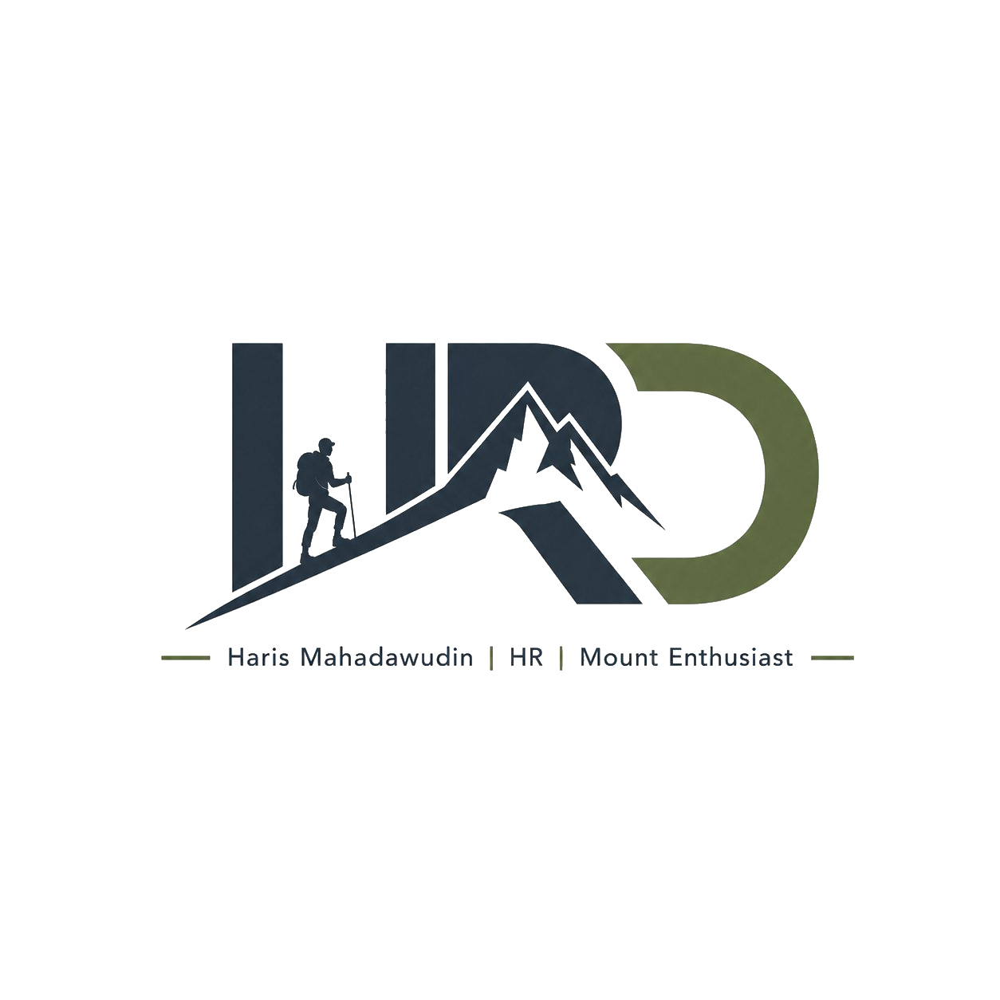

Menavigasi kompleksitas sumber daya manusia di siang hari — menaklukkan puncak-puncak Indonesia di akhir pekan. Dua dunia, satu semangat yang sama.

Halo! Saya Haris — seorang profesional HR yang berspesialisasi di bidang Compensation & Benefit. Saya percaya bahwa merancang sistem kompensasi yang adil dan transparan adalah bentuk nyata menghargai kontribusi setiap karyawan.
Di luar jam kerja, saya adalah pendaki yang percaya bahwa setiap gunung punya cerita dan pelajaran tersendiri. Summit adalah bonus — proses perjalanannya yang membentuk karakter dan ketahanan diri.
Website ini adalah ruang saya untuk mendokumentasikan dua dunia yang saya cintai: dunia profesional HR dan dunia petualangan alam terbuka.
Tertarik berdiskusi soal HR, kompensasi, atau sekadar berbagi cerita pendakian? Saya selalu terbuka untuk ngobrol dan berkolaborasi.